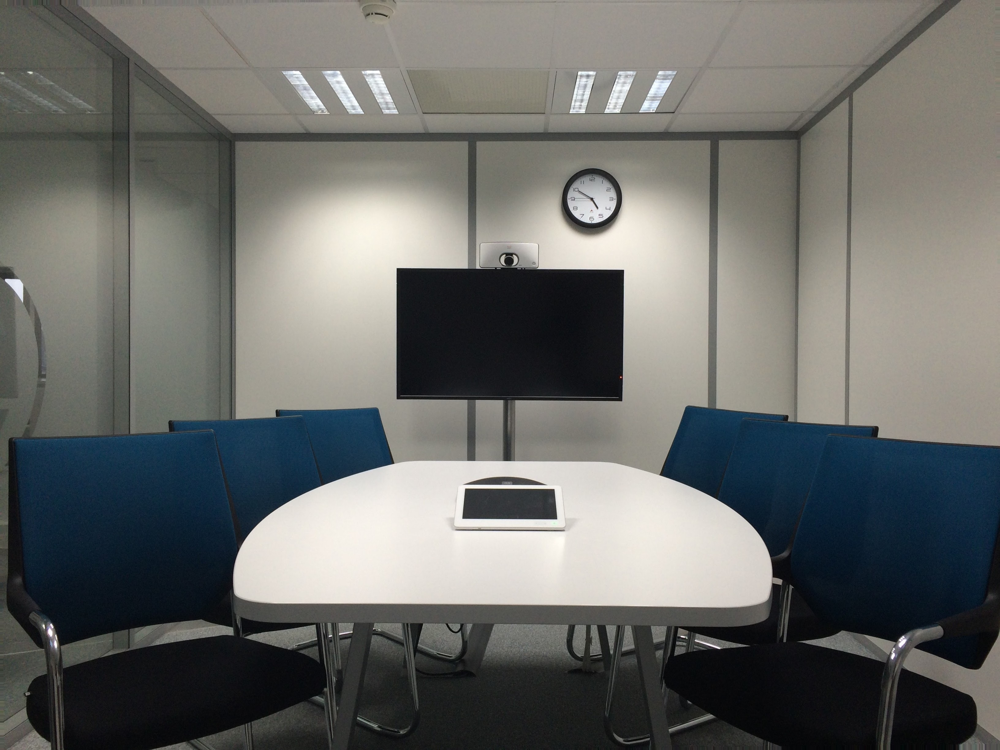

What Do I Do In My Free Time?
As most people, I have plenty of free time which I love to spend trying out new activities and embarking on new adventures. Some of my hobbies are:
Sports
I like to think of myself as an active person who is fit and healthy. There are several sports that I partake in at the moment. The biggest three being football, muay Thai, and going to the GYM.
Football has always been a passion of mine. One of the earliest memories I have as a child is of me playing football with my friends in the park. However, as strange as people might find it, I am not a big fan of watching football. To me, playing football and watching football are two completely different things. My favourite positions are either as a centre mid or as a left winger.
Aside from playing football, I was never really an active person. However, a few years back, I started working out in order to get healthier. I started taking Muay Thai classes which I found to be very enjoyable and exciting. However, I was forced to leave my classes behind due to travels. I later was introduced to the gym and lifting weights through a friend of mine. This has quickly become a passion of mine and would love to do this for a very very long time.
Cooking
Even though I consider cooking to be a hobby, I believe that everyone should at least know the basics of cooking since it is an essential part of our lives. One of the main reasons I got into cooking was because of going to the gym. In order to build muscle, a person needs to eat a certain amount of calories and know their macro-distribution. In order for me to do that I needed to learn how to cook so that I was able to eat the right food that I needed to achieve my goals in the gym. However, in no way do I consider myself a professional cook. There is still soo much to learn and I am excited to continue my journey.
Reading books
Surprisingly, this generation hates reading. Why? I have no clue. However, reading is such an amazing activity which is important and vital for everyone. It helps you discover new things, makes you more imaginative and develop your mind. I enjoy reading fictional books such as "The Percy Jackson series" and "Jack Reacher series". However, I also love reading non-fictional books such as "Blink: The Power of Thinking Without Thinking" and "The Autobiography of Malcolm X". Even though English is my second language, I believe that I was able to be fluent in English thanks to reading. Without it, I think my English would have been terrible.

Volunteering at youth events
Ever since a young age, I knew that many communities in my area were suffering and many of their teenagers were in a bad place. However, as I grew older, many improvements were made, and many problems were solved. A few months back, me and a few other people my age put together a youth club that takes place every Monday where teenagers can come together, talk about how to improve the community, and partake in different activities. It has been going well and we have many future plans that we would like to do in the upcoming months.
